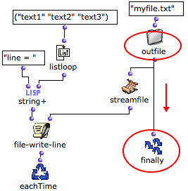
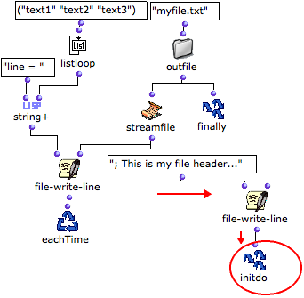
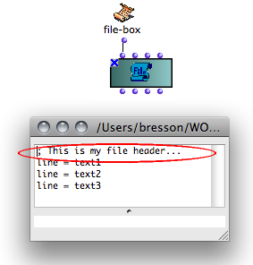
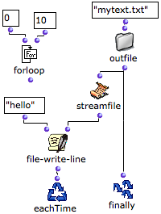
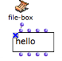
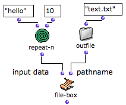
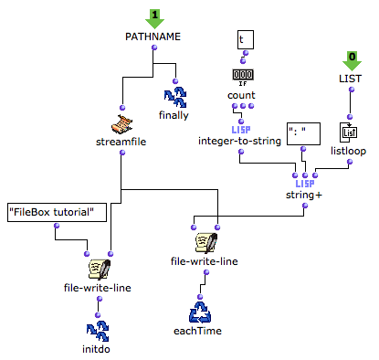
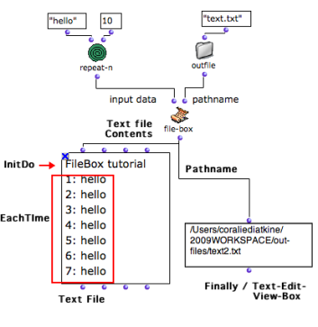

OpenMusic DocumentationHiérarchie de section : OM 6.6 User Manual > Visual Programming II > Files > File-Box > Designing Iterations
OpenMusic DocumentationHiérarchie de section : OM 6.6 User Manual > Visual Programming II > Files > File-Box > Designing Iterations
Navigation : page précédente | page suivante
Attention, votre navigateur ne supporte pas le javascript ou celui-ci à été désactivé. Certaines fonctionnalités de ce guide sont restreintes.
Designing an Iterative Process with the File-Box
All the common OMloop tools – iterators, accumulators – can be used in the File-Box to design iterative file read/write processes.
Getting Results : Finally
Just like in an OMLoop, the Finally box allows to return something as a result of the iteration.
Example : Returning a Pathname

|
Pathnames can be returned at the end of a process, which is quite convenient when writing a file.
|
{kind=link}
InitDo : Performing Initial Operations
The InitDo box is called internally, just after the filestream has been initialized, and before the iteration starts.
It allows to perform initial operations, such as writing a "file header", as in this example.
Example : Writing a Header

Here, an Initdo module has been added to the program, so that a text header is added before the strings.

|
The data printed by InitDo is visible in the text file. |
Eachtime : Repeating an Operation
Eachtime allows to execute an operation at each step of the loop. can be used for writing data in the file at each step of the loop.
Example : Writing Several Lines of Strings
|

|
The text file can be visualized in a textfile box. |

|
File-Box inputs
The content of the file and other parameters – the file pathname for instance – can be set in higher-level programs and abstracted as inputs of the File-Box.
Inputs are added or removed like in OMLoop boxes : press alt + → or ←.
Here, File-Box writes a text file that contains ten lines with "hello". The internal program of FileBox allows to add a header to the text, and a number to each line. |

|

On the left, the " pathname" input box returns a pathname to Finally and streamfile.
The pathname is returned to file-write-line functions.
The first file-write-line returns a header to Initdo, which executes the operation before the iteration starts.
The second file-write-line writes the content of the text file with the boxes located on the right.
The " list" input returns a list with ten "hellos".
Listloop enumerates each item of the list. At each step, count gets "true" and returns the number of the step.
String+ concatenates this number, ":" and "hello".
Eachtime writes a line containing the resulting string in the text at each step of the loop.

The pathname returned by Finally can possibly be displayed in a text-view .
The content of the text displayed in the textfile box shows :
- the header printed by Initdo
- the lines printed by Eachtime.
Références :
Plan :
Navigation : page précédente | page suivante
A propos...(c) Ircam - Centre Pompidou